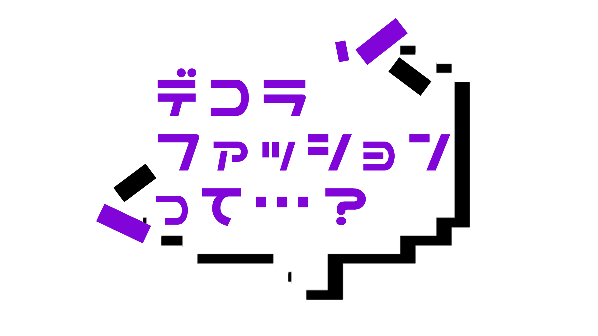
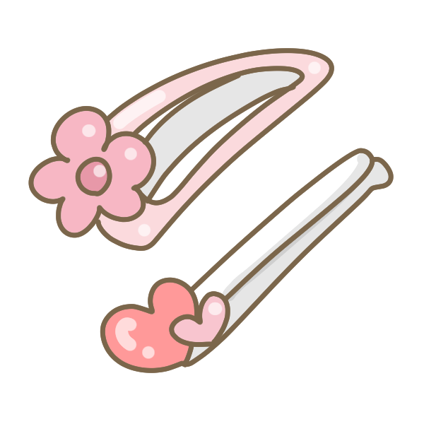
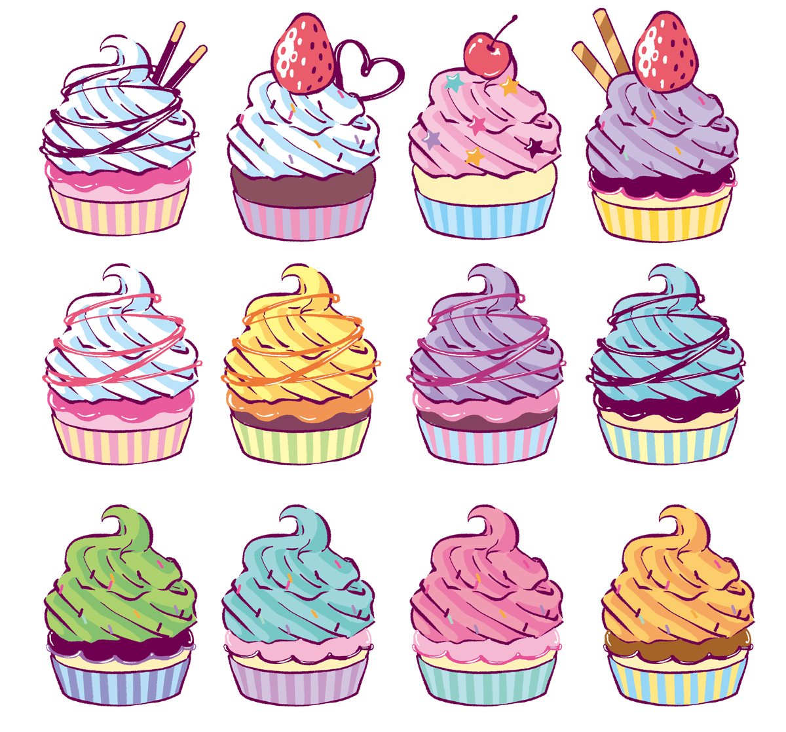

1998

春頃から原宿を中心に急増した
ファッション・スタイルで、
ピンクなどの派手な色使いや少女っぽさ、
「デコラ」の由来でもある
デコラティヴ（装飾過剰）な
アクセサリーが特徴。
デコラの発信源である
ストリートファッション雑誌
「FRUiTS」では多く取り上げられた。

90年代後半に原色を基本とした
個性的なファッションと
強烈なキャラクターで、
「シノラー」ブームを巻き起こした。
シノラーファッションが流行し、
ランドセルを背負い
原宿に出かける子も多かった。

原宿ファッション雑誌『KERA』や
ストリートファッション雑誌『FRUiTS』の
休刊に伴い、徐々にデコラファッションをする
子が減っている現在の原宿。
その背景にはファストファッションブランドが
多くでき、原宿系のブランドが衰退したことも
要因とされる。
6%DOKIDOKI

あのきゃりーぱみゅぱみゅの
MVも手がける
増田セバスチャンのブランド
原宿に店舗あり
LISTEN
FLAVER

原宿系モデル紅林大空ちゃんが
着画モデルを起用している
アニメとのコラボデザインも多い
原宿 竹下通りにあるよ
通販もあり
galaxxxy
原色カラー、カラフルなカラーが多い
銀河系ブランド
アイドルとコラボデザインなども
原宿系ファッションっぽい感じだけど
渋谷にあるので注意
通販もあり
クレアーズ

安い！海外アクセ可愛い！
これぞプチプラショップ
デコラ必須のピンが沢山あるよ
全国に多数展開！
にじいろぽにっく

メルヘン雑貨の可愛いお店
パステルな世界に迷ってしまったみたい
アクセからパーツ類まで多数置いています
大阪 アメリカ村の中にあるよ
tenten城

クリエイター雑貨を取り扱っている
いろんなジャンルのクリエイターさんの
アクセサリーなどがるので
唯一無二のあなたになれる
大阪 中崎町にあるよ

TRICK STORE
どんな要望も叶えてくれる魔法のサロン
特殊なブレイズ、ティンセル、チューブ
多色なカラー
とっても綺麗に染めてくれます
可愛い店員さんがいっぱい！
大阪 アメリカ村にあるよ

MOSHASU
元々 TRICK STOREにいた
みきすけさんが店長で
2019年２月20日にオープンした
派手髪をツヤツヤに染めてくれる
東京 下北沢にあるよ
系列店が名古屋・広島にもある！

Candye♡
Syrup
スーパーキュートなIKUさんが店長の
派手髪サロン。クリエイターショップも
手がけている。内装も可愛いサロン。
東京 原宿にあるよ

紅林大空ちゃん
原宿系ファッションモデルの
紅林大空ちゃんが分かりやすく
デコラの解説をしている動画があります♪
「くれちゃんねる」でYoutuberとしても活躍中♡
♡デコラの仕方♡
♡くれちゃんねる♡

Pinkey
中学３年生の頃に原宿系雑誌「KERA」に
出会う。そこで紅林大空ちゃんを見て感銘を
受け、原宿系ファッションに目覚める。
以後6年間デコラファッションをしている。